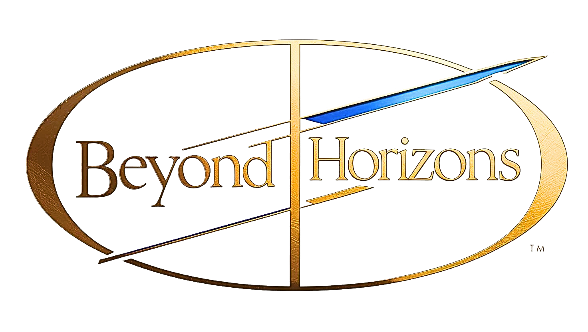

COMPANY 会社情報
Beyond Horizonsは、各国富裕層をターゲットに、一般的な旅客サービスから、プライベートジェット、レジャーフライトを興行している旅行代理店である。株式は非公開であり、運営方針、また体制については表向きにならない傾向がある。
「最上級の安全と、確実な往来を」をビジョンとしており、搭乗前の送迎サービスから旅行中のガイドまでを自社単独で完結させることにより、高水準のセキュリティを実現させている。
> 代表挨拶